Iwadono-san,
April 25, 2004
(organised by Ginny Tapley)
Photos by Bob and
report by Ginny
|
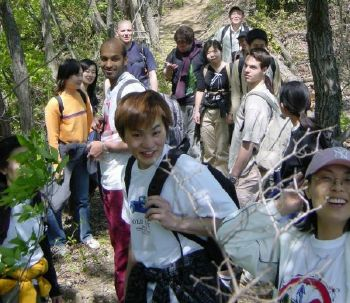 |
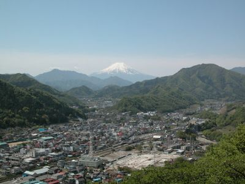 |
| |
nice views of
Fuji-san, the first for many |
|
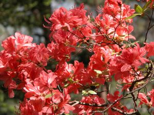
spring flowers |
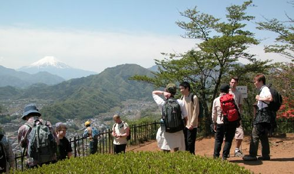 |
|
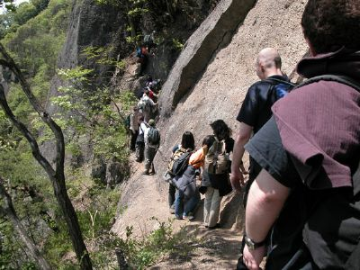 |
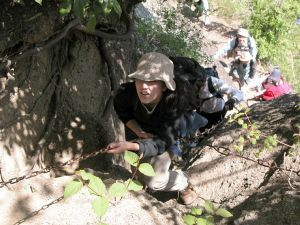 |
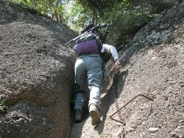 |
|
there were
chains... |
and ladders... |
|
examining the rocks |
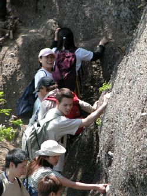 |
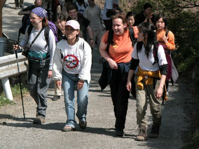 |
| 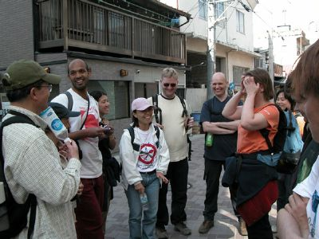 |
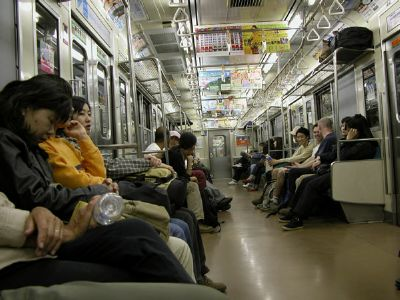 |
|
back into town |
relax in the train |
Report by Ginny:
Thanks to everyone who came on the hike on Sunday.
Despite being a large group (19 of us), everything went very smoothly, and we
managed to start hiking soon after 9.30 as planned. We had beautiful
weather, and were soon greeted with a perfect view of snow-clad Fuji-san - the
first for some recent arrivals to Japan. The beginning of the hike was a
steep path up to the top, from which we had lovely views. It was pretty
crowded, though - we overtook one group of 50 or so hikers on the way up, and
met another similarly sized group at the top - everyone was out
enjoying the sun! We stopped for a brief rest, and to allow one group to get
well ahead of us, but unfortunately we soon caught up with them and were
stuck in a "traffic jam" at the first set of chains! This little climb proved
just a taster for the follow-up - a narrow ledge followed by another climb
with chains over a very steep drop. Everyone seemed to enjoy it, although
some found it a little nerve-wracking... A large hiking group was already
lunching in a resting area, so we stopped a bit further along the path.
What we hadn't realised was that not far away
was the spectacular high sheer cliff on top of which was a rocky outcrop perfect for a rest - and so
we stopped again to enjoy the views. The route down a lovely wooded path was
quite steep and punctuated by the occasional "aaahhh" as people slipped!
The hike was over all too quickly and we had plenty of time, but
unfortunately all the onsens were too far to walk to, and also could only take a few
people at a time, so we ended up walking back to Ootsuki. Whether it was the
relaxed mood, the hot sunny weather, the good company, or a combination of
everything, some of us couldn't resist buying a beer to drink as we stood
around chatting at the station. Since it was still early, some people decided to
make the most of the afternoon and got off the train at Shinjuku, while
others headed home. All in all it was a very enjoyable day. Thanks again to
everyone for coming along.
Back to the
Home Page